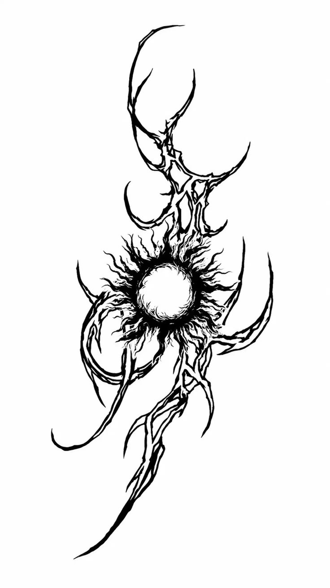
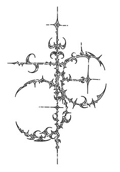
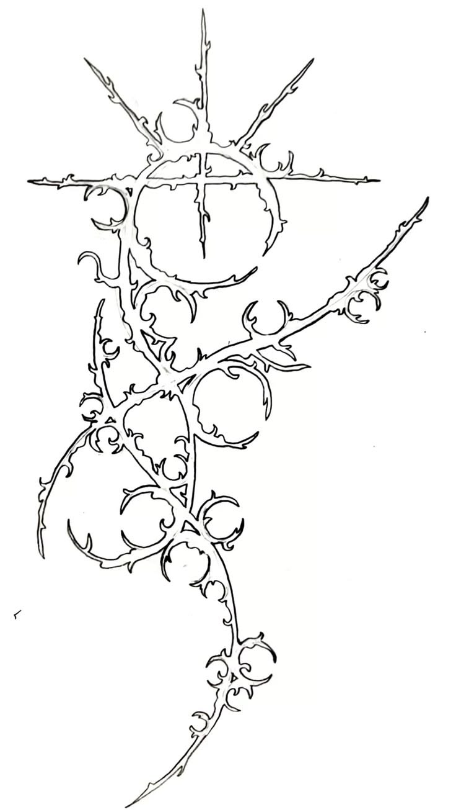
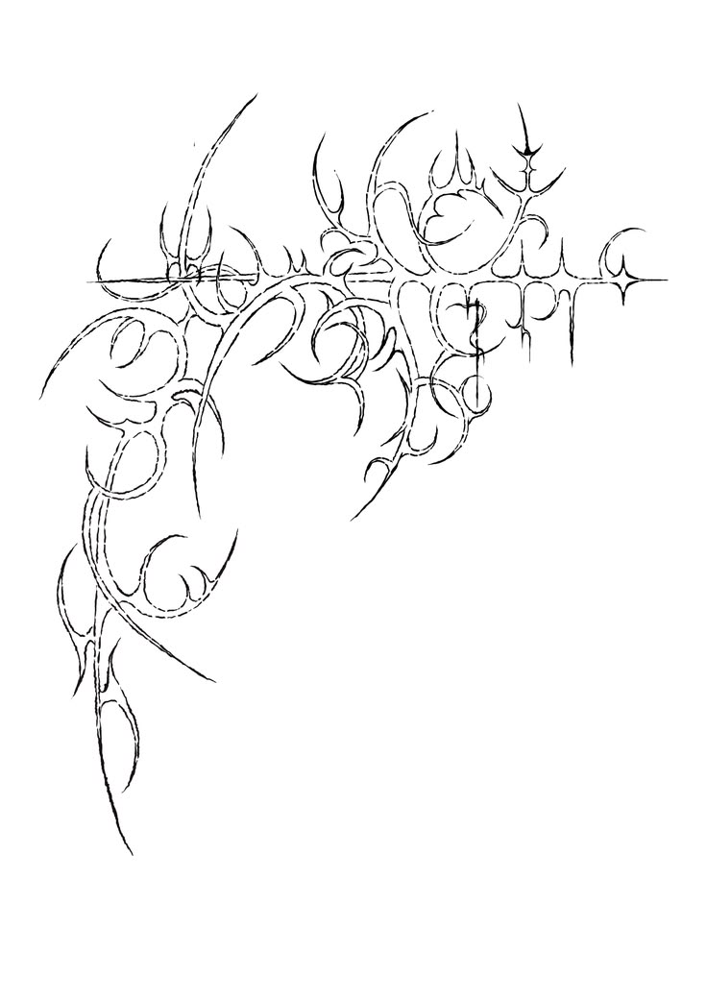
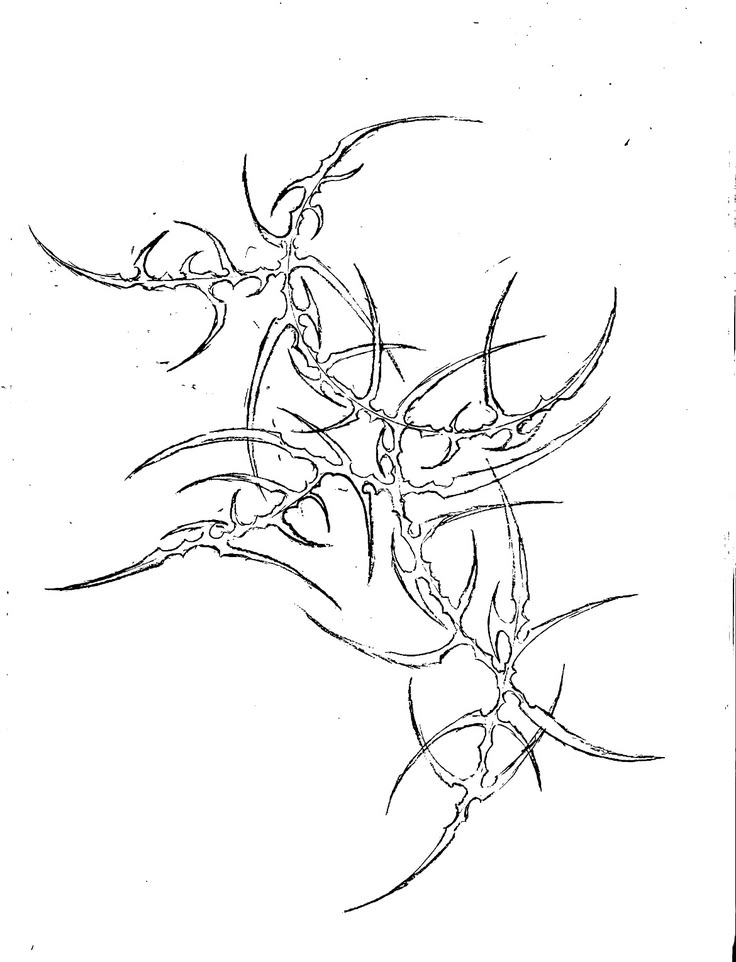

NIGHT CYCLE: ACTIVE
DAYLIGHT ARRIVAL: 04:17:22
! Surface access is restricted. The sun is not safe. !

Current Temperature: 128°F
Visibility: 12%
Surface Radiation: CRITICAL

ᖶᕼᘿ Sᑘᘉ ᕲᓍᘿS ᘉᓍᖶ ᕲᘿSᖶᖇᓍᖻ.
ᖶᕼᘿ Sᑘᘉ ᖇᘿᐺᘿᗩᒪS.
Sᖶᘿᕵ ᓰᘉᖶᓍ ᖶᕼᘿ ᒪᓰᘜᕼᖶ ᗩᘉᕲ ᗷᘿ ᕵᑘᖇᓰᖴᓰᘿᕲ.
! SURVIVOR ALERTDO NOT TRUST THE SUNFALL NETWORK. THE TRANSMISSION IS A TRAP. SEEK SHELTER IMMEDIATELY.


SPECIES: UNKNOWN
HEAT SIGNATURE: UNSTABLE
DISTANCE: 400 METERS
THREAT LEVEL: HIGH
SUNFALL NETWORK / SYSTEM NOTICE